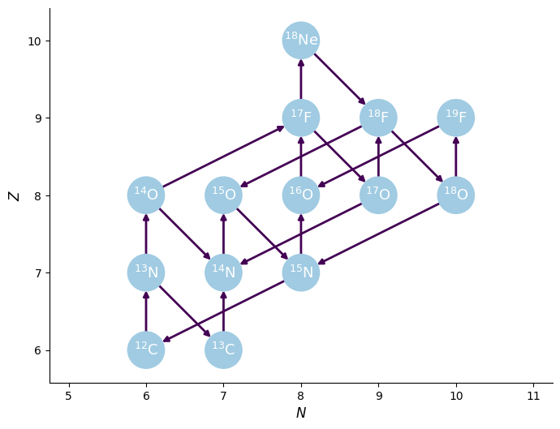
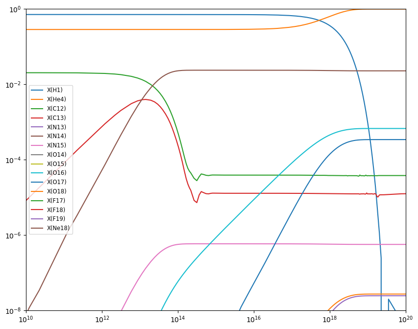

Integration Example#
We can use pynucastro to generate the righthand side function for an astrophysical reaction network.
We’ll create a CNO network that has the rates for all 4 CNO cycles + hot-CNO, as listed here: https://reaclib.jinaweb.org/popularRates.php
import numpy as np
import matplotlib.pyplot as plt
import pynucastro as pyna
rate_names = ["c12(p,g)n13",
"c13(p,g)n14",
"n13(,)c13",
"n13(p,g)o14",
"n14(p,g)o15",
"n15(p,a)c12",
"o14(,)n14",
"o15(,)n15",
"n15(p,g)o16",
"o16(p,g)f17",
"f17(,)o17",
"o17(p,a)n14",
"o17(p,g)f18",
"f18(,)o18",
"o18(p,a)n15",
"o18(p,g)f19",
"f19(p,a)o16",
"o14(a,p)f17",
"f17(p,g)ne18",
"ne18(,)f18",
"f18(p,a)o15"]
rl = pyna.ReacLibLibrary()
rates = rl.get_rate_by_name(rate_names)
rc = pyna.RateCollection(rates=rates)
We can visualize the network and rates linking the nuclei
fig = rc.plot()

pynucastro can write out the python code needed to evaluate the reaction rates
pynet = pyna.PythonNetwork(rates=rates)
pynet.write_network("cno_integration_example.py")
Show code cell content
#%cat cno_integration_example.py
Now we can import the network that was just created
import cno_integration_example as cno
---------------------------------------------------------------------------
ModuleNotFoundError Traceback (most recent call last)
Cell In[6], line 1
----> 1 import cno_integration_example as cno
File ~/work/stars/stars/content/reaction_networks/cno_integration_example.py:1
----> 1 import numba
2 import numpy as np
3 from scipy import constants
ModuleNotFoundError: No module named 'numba'
We’ll use the BDF solver from SciPy
from scipy.integrate import solve_ivp
Now we’ll set the thermodynamic conditions. We initialize mass fractions and then convert to molar fractions, since that’s what the RHS uses
rho = 150
T = 1.5e7
X0 = np.zeros(cno.nnuc)
X0[cno.jp] = 0.7
X0[cno.jhe4] = 0.28
X0[cno.jc12] = 0.02
Y0 = X0/cno.A
Y0
array([0.7 , 0.07 , 0.00166667, 0. , 0. ,
0. , 0. , 0. , 0. , 0. ,
0. , 0. , 0. , 0. , 0. ,
0. ])
tmax = 1.e20
sol = solve_ivp(cno.rhs, [0, tmax], Y0, method="BDF",
dense_output=True, args=(rho, T), rtol=1.e-6, atol=1.e-6)
sol
message: The solver successfully reached the end of the integration interval.
success: True
status: 0
t: [ 0.000e+00 1.000e-04 ... 7.679e+19 1.000e+20]
y: [[ 7.000e-01 7.000e-01 ... 5.177e-09 2.786e-10]
[ 7.000e-02 7.000e-02 ... 2.441e-01 2.441e-01]
...
[ 0.000e+00 3.467e-153 ... 1.275e-09 1.275e-09]
[ 0.000e+00 1.098e-119 ... -1.564e-55 -4.073e-60]]
sol: <scipy.integrate._ivp.common.OdeSolution object at 0x7f6b02ae8a50>
t_events: None
y_events: None
nfev: 345
njev: 20
nlu: 63
Now we can plot the mass fractions.
fig = plt.figure()
ax = fig.add_subplot(111)
for n in range(cno.nnuc):
ax.loglog(sol.t, sol.y[n,:] * cno.A[n], label=f"X({cno.names[n].capitalize()})")
ax.set_xlim(1.e10, 1.e20)
ax.set_ylim(1.e-8, 1.0)
ax.legend(fontsize="small")
fig.set_size_inches((10, 8))
